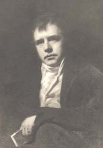

|
|
Home | Corson
Collection | Biography | Works | Image
Collection | Recent
Publications | Correspondence | Forthcoming
Events | Links | E-texts | Contact
Sir Henry Raeburn's 1809 Portrait of Sir
Walter Scott
| Scott disliked the solemn and intent cast of
his features in Sir Henry Raeburn's 1808
portrait. These were softened, very possibly at Scott's
instigation, in a version that he had painted for himself in
1809. However, as Scott was later to write that Raeburn had
'twice made a very chowderheaded [i.e. clumsy- or thick-headed]
person of me' (Letters, V, 349), it appears that he
remained unsatisfied. Other minor changes were made. Scott's
greyhound Percy was introduced, and the original backdrop --
a ruined tower with, in the distance, a view of Hermitage Castle
and the Liddesdale Hills -- was replaced by trees and a view
of Yarrow. The green coat that Scott wears in the 1808 picture
gives way to a more homely brown. Where the earlier portrait
presents Scott as a poet amidst the very scenery that he has
celebrated in his verse, the latter is a more personal, domestic
portrait. |

Click on the
thumbnail to see a photogravure of
a detail of Raeburn's 1809 portrait of Scott.
|
|
Only one reproduction appears to have been made of the 1809 portrait.
When 39 North Castle Street was
sold following the financial
crash of 1826, Scott's friend, James Skene of Rubislaw agreed
to look after the picture (Letters, VIII, 453). In 1831
Scott asked for it to be returned and offered to pay for a copy
to be made. Skene, however, had already had a facsimile made by
Sir John Watson Gordon. The facsimile was acquired by Dr Corson
in 1961, and an image will shortly appear on this page. In unpublished
notes, Corson opined that the engraved
portrait of Scott by W.H.
Lizars in J.G. Lockhart's Peter's Letters to his Kinsfolk is
based on a sketch made by Lockhart of the 1809 portrait. Francis
Russell, however, in his Portraits of Sir Walter Scott lists
this as a version of the 1808 portrait. The original portrait hangs
at Abbotsford.
Bibliography
- Russell, Francis. Portraits
of Sir Walter Scott: A Study of Romantic Portraiture (London:
The Author, 1987)
- Scott, Walter, Sir. The Letters of
Sir Walter Scott, ed. H.J.C. Grierson (London: Constable,
1932-37)
Back to Index

Last updated: 21-Mar-2005
© Edinburgh University Library
|
|